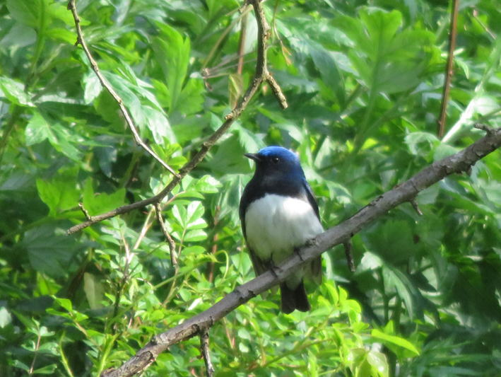
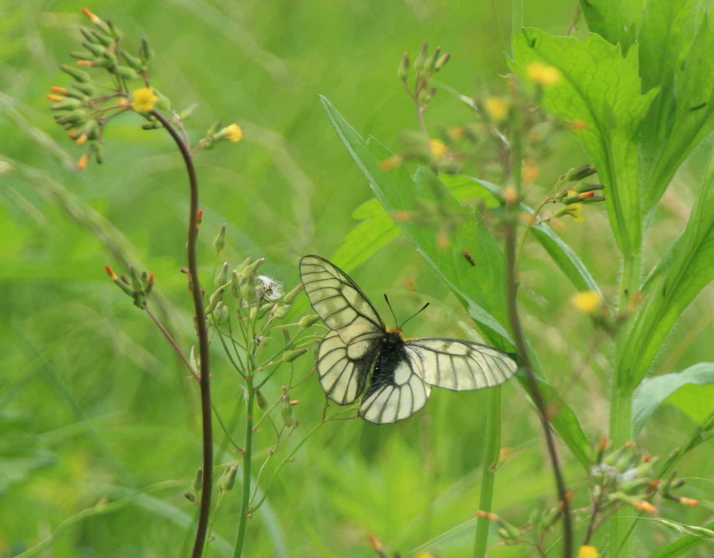

七つ森・いきものがたり
登場人物
1. 斉藤俊雄
2. 小林知輝
◆プロローグ
知輝 斉藤先生じゃないですか。
斉藤 (あっ)知輝くん。どうしたの。
知輝 えっと、そのー、下見なんです。
斉藤 下見？七つ森を？
知輝 あの、今日の午後、二人で歩くことになっていて…
斉藤 二人って、智花さんと。
知輝 (あっ)はい。
斉藤 七つ森を二人でか。君たちらしいね。
知輝 ところで斉藤先生は何をしてるんですか。
斉藤 創作活動。
知輝 森で創作活動ですか？
斉藤 書斎でパソコンに向かっているだけだと行き詰まってしまうんだ。そんなときは森に出かけて、森の生き物との出合いを楽しむ。
知輝 生き物との出合いですか。
斉藤 僕は生き物が大好きなんだ。
知輝 どんな生き物が好きなんですか。
斉藤 草花、樹木、鳥、昆虫、最近はキノコやクモにも興味を持ってね。何でもオッケーっていう感じかな。生き物とのすてきな出合いが、行き詰まりを打ち破る突破口になるんだよね。七つ森にはそんなすてきな生き物がたくさん棲んでいるんだ。
知輝 七つ森は先生の発想の泉なんですね。
斉藤 僕のすべての作品がこの七つ森で生まれたっていっても言い過ぎじゃないと思う。
知輝 今はどんな作品を創っているんですか。
斉藤 それがね、今創ってるのは新しい劇じゃなくて、後書きなんだ。
知輝 後書き？
斉藤 実はね、今度、『七つ森〜シリーズ・七つ森の子どもたち〜斉藤俊雄作品集２』が発売されるんだけど、その後書きの構想がどうしても浮かんでこなくって。
知輝 その作品集にはどんな作品が収録されるんですか。
斉藤 作品集のタイトルになった『七つ森』、それと『ザネリ』『怪談の多い料理店』『魔術』『森の交響曲』そして、君の登場する『とも』。
知輝 (あっ)僕それ全部読みました。暗記するくらい。
斉藤 そうなんだ。知輝くんはどれが一番好き。
知輝 ぜ…全部です。
斉藤 知輝くんらしい答えだね。
知輝 ほ、ほんとに全部好きなんです。先生、僕に先生がどんな思いで七つ森シリーズを創ったか教えてくれませんか。童話作家になるための参考にしたいんです。
斉藤 童話作家か。わかった。それじゃ七つ森を散歩しながら話そうか。そうすれば彼女と一緒に歩くための下見にもなるだろ。
知輝 いいんですか。ありがとうございます。
◆オオルリ そして『七つ森』
斉藤 知輝くん、耳を澄ましてごらん。
知輝 …
斉藤 ほら、この鳴き声。
知輝 …
斉藤 チーロールーリー・ジジッって聞こえない。
知輝 聞こえます。
斉藤 オオルリの囀り。
知輝 (あーっ)『七つ森』で隼人くんと友達になった、
斉藤 ほら、あの木の梢のところ。
知輝 (あっ)あれですね。
斉藤 この双眼鏡を使って見てごらん。
知輝 (わー)背中が真っ青。七つ森にはこんなきれいな鳥がいるんですね。
斉藤 僕が鳥に興味を持ったとき、一番のあこがれだった鳥がこのオオルリだった。初めて出会えたときの興奮は今でも忘れない。
知輝 『七つ森』はそんな自然の素晴らしさを観客に訴える作品ですね。
斉藤 観客というよりも、本音を言うと部員なんだけどね。
知輝 部員なんですか。
斉藤 もちろん『七つ森』を観た後、観客が自然を好きになって鳥や花に興味を持ってくれたら嬉しいよ。残念ながら、僕の劇はそこまでの力は持ってないと思うんだ。でも、上演した部員は違う。
知輝 どう違うんですか。
斉藤 みんな本当に自然が好きになるんだ。特に鳥には夢中になる。僕はね、自然劇場と名づけた取り組みを長い間続けてるんだ。
知輝 自然劇場？
斉藤 自然の劇場にお邪魔して、生の自然を体験する取り組みなんだ。『七つ森』を上演する前にも三回出かけた。ただね、この時は上演を決めたのが秋の終わりだったんで、夏鳥のオオルリは南の国に帰っちゃって、見ることはできなかったんだけど。
知輝 今の子ども達は自然に興味を持たないなんて新聞に書いてありました。
斉藤 確かにそうなのかもしれない、でも、劇を通してその自然に触れた子ども達は違うんだ。『七つ森』を上演した後、「ルリに会いに行く」というサブタイトルをつけた自然劇場を日光で開催したんだ。全員がオオルリに出会えたんだけど、その時の興奮は、あこがれのスターに出会った時と同じなんだ。
知輝 オオルリがあこがれのスター、それ、いいですね。
斉藤 僕はそんな現代のすてきな子ども達を『七つ森』で描きたかった。
知輝 彼らは失敗ばかりしますね。
斉藤 そんな失敗することも含めて子ども達って魅力的なんだよね。
知輝 『七つ森』の登場人物は先生の他の作品にも登場してますよね。
斉藤 「『シリーズ七つ森の子ども達』に登場した人物大集合！」みたいな作品にしたかったんだ。
知輝 主人公ハヤト役の隼人くんは『ザネリ』の主人公ですよね。『ザネリ』で五年生だった隼人くんは六年生になったんですね。でも相変わらず漢字は苦手で。
斉藤 アメリカでの生活が長かったからね。
知輝 演出担当の岸凉子は『春一番』では中学三年生でしたね。同じく『春一番』からは犬田裕美が結婚して猫田裕美という名前で登場しますね。生徒会長だった山口恵子は三浦恵子となって名前だけの登場。瑠璃姫の海野渚は『降るような星空』、ヤブレ役の西田サチは『青空』、音響の近藤愛は『ときめきよろめきフォトグラフ』の登場人物。後これは推測なんですが、小瑠璃の大場真樹は、『夏休み』の主人公・大場健一と関係があるんじゃないですか。
斉藤 あたり。彼とかくれんぼをしていた少女が大場真樹。彼の孫なんだ。
知輝 カブレ役の山本大輔くんがわからなかったんですけど。
斉藤 大輔くんは、これから書く劇に登場する予定。彼は未来の僕の作品の登場人物。
知輝 その作品読んでみたいです。
斉藤 さっ、七つ森公園に着いたよ。『ザネリ』で子どもたちが『銀河鉄道の夜』を練習していた場所。
知輝 公園っていうより、森の中の広場って感じですね。
斉藤 知輝くんあれ。あそこの空を飛んでる鳥。
◆トビ そして『ザネリ』
知輝 ゆっくりと輪を描いて飛んでますね。何ていう鳥ですか。
斉藤 トビ。別名トンビ。
知輝 (あー)『ザネリ』に出てくる。隼人くんがゾンビと間違えた。
斉藤 大きな鳥だろ。
知輝 はい。きっと鳥たちに恐れられてるんでしょうね。
斉藤 それがね、タカの仲間なのに全然恐れられてないんだ。生ゴミなんか食べたりするからね。
知輝 そう言えば「鳶が鷹を生む」っていうことわざがありますね。
斉藤 トンビもタカの仲間なんだけどね。
知輝 斉藤先生はトンビって好きですか。
斉藤 もちろん好きさ。情けないと思われがちなタカも、それはそれでいいよねって。
知輝 嫌いな鳥っていないんですか。
斉藤 いないね。知輝くんはどうなの。
知輝 僕はどうもカラスが苦手です。何か意地悪な気がして。
斉藤 そんなカラスも、奥が深いんだよね。カラスは別に意地悪してるわけじゃないんだ。
知輝 意地悪っていえば、斉藤先生はザネリを意地悪な子って思わないんですね。
斉藤 ジョバンニをからかうザネリは意地悪だと思う。でもね、それがザネリのすべてだとは思えないんだ。僕は、もし僕のクラスにザネリがいてもザネリのことを嫌いにはならないっていう自信がある。『銀河鉄道の夜』に描かれた場面だけでザネリ=極悪人と考える教師に教わっている生徒ってかわいそうだと思う。だってザネリくらいの意地悪をする子って世の中にいくらでもいるだろ。それでその子の人格すべてを否定するなんてひどいと思う。僕はカムパネルラが死んでしまった後、ザネリは一生そのことを背負い続けるって思うんだ。僕は『ザネリ』でそんなザネリを描きたかった。
知輝 人の命を助けるために、自分の命を捧げる人のドラマってたくさんありますよね。
斉藤 『タッチ』とか？
知輝 『タッチ』、僕大好きです。和也くん、甲子園を決める試合で男の子を助けて死んでしまいますね。
斉藤 大人になってからの僕は、あのシーンで、助けられた男の子のことも考えてしまうんだよ。すごいことを背負っちゃったよなって。僕はその助けられた男の子を描いてみたいと思ったんだ。そんなふうにして誕生したのが『ザネリ』なんだ。
知輝 『ザネリ』って『夏休み』に収録されている『ときめきよろめきフォトグラフ』と重なる話ですよね。
斉藤 その通り。
知輝 隼人くんのお気に入りの鶴田美佳さんって『ときめき』の主人公・鶴田夏美さんの妹ですね。
斉藤 そうだね、『ときめき』では物語の中心となる夏美さんの事故が出てくるよね。
知輝 隼人くんがその事故を目撃するんですね。(あっ)それと隼人くんの兄の白鳥ひろみさんが、この先『怪談の多い料理店』を書くであろうことがほのめかされてますね。
斉藤 そうだね、『ザネリ』の何年か先、彼は『怪談の多い料理店』を完成させるんだ。彼が『怪談の多い料理店』の構想を練った場所がここ。
◆ヒトリシズカ そして『怪談の多い料理店』
知輝 (わー)白い花が一面に咲いてますね。何ていう花ですか。
斉藤 ヒトリシズカ。
知輝 ヒトリシズカって『怪談の多い料理店』の『静伝説』に登場する花ですね。
斉藤 スプリング・エフェメラルの仲間なんだ。
知輝 スプリング・エフェメラル？
斉藤 春の儚(はかな)い生命(いのち)っていう意味。春先の短い間現れそして消えていく。
知輝 スプリング・エフェメラル。すてきな響きですね。ところで、『怪談の多い料理店』を創ろうと思ったきっかけは何なんですか。
斉藤 僕の話をしていいのかな。ひろみくんが書いたという設定で実際の劇を書いたのは僕だからね。
知輝 お願いします。
斉藤 きっかけはディズニー映画の『美女と野獣』を観たことなんだ。ラストシーンで美女が結ばれるのは、野獣ではなくて野獣の姿をした王子様だったということに違和感を覚えたんだ。「結局外見なんだよ」って感じちゃって。僕は映画を見終わった後、自分なりの『美女と野獣』を創りたいって思ったんだ。
知輝 それが『怪談の多い料理店』なんですね。
斉藤 そういうこと。
知輝 第二話の『トイレの鼻毛さん』は、ふざけて書いたのかと思いました。
斉藤 とんでもない。僕は笑いを意図したシーンを見ると、作者のまなざしがわかるって考えている。だから、大まじめで書いたんだ。
知輝 作者のまなざしですか。
斉藤 ある人にとっては「ハゲ」という言葉は、笑いなんだよ。だから、「ハゲ」とう言葉で笑いをとろうと考えてしまう。学校現場でもそんな悲しい笑いに出会うことがある。もちろん「ハゲ」と言って人を馬鹿にする人を、今後僕が描くことはあるかもしれない。でも、僕の劇ではそのシーンが笑いに繋がることはない。
知輝 でも鼻毛の長い少女は笑いですよね。
斉藤 正直なところ、笑いとして取り上げていいかどうか迷ったんだよ。僕は熟考の末、鼻毛の長い女の子を笑いとして採用したんだ。
知輝 ハゲも鼻毛も身体に関係することですよね。ハゲは笑いにしてはだめで、鼻毛は笑いにしてもいいと考えたのはなぜですか。
斉藤 ハゲとハナゲ、一文字違いだけど、この違いが大きいんだ。ハゲのある人は好きではげている訳じゃないだろ。できればそこに毛があってほしいと思っているはずさ。そんな人が気にしている身体的特徴を笑いにするというのは、弱者をいじめる笑いにつながる。それじゃ、鼻毛はどうだろう。鼻毛さんは自分で鼻毛を伸ばしているんだ。切ろうと思えば切れるのに自分の意志で伸ばしているんだよ。
知輝 すごい人ですね、それ。
斉藤 人っていうより、妖怪なんだけどね。おそらく世の中に鼻毛をおしゃれって考えて伸ばしている人はいないだろう。同じ身体に関することでもこれは笑いに使っていいって考えたんだ。
知輝 結局のところ、先生はどんな笑いが好きなんですか。
斉藤 一言で言えばナンセンスな笑いかな。
知輝 美術室で突然縄跳びを始める山姥とか。
斉藤 僕にとって、とってもわくわくする世界だね。さてと、知輝くん、見晴らしの丘に着いたよ。
◆シロツメクサ そして『魔術』
斉藤 ここは『魔術』の主人公、麻由美のお気に入りの場所。
知輝 この丘一面に咲いている白い花なら僕にもわかります。クローバーですよね。
斉藤 日本名は何だか知ってる？
知輝 シロツメクサ。
斉藤 正解。この草、元々日本にある植物じゃないんだ。
知輝 帰化植物なんですね。なんかちょっとがっかりだな。
斉藤 なるほどね、そのがっかりという気持ちわかるよ。帰化植物って悪者扱いされているからね。
知輝 悪者じゃないんですか。僕、学校でそう教えてもらったんですけど。
斉藤 教師としての僕は、帰化植物＝悪のような考え方を学校に持ち込みたくないんだ。
知輝 どうしてですか。
斉藤 日本古来の生態系を守るということは必要なことなんだと思う。でもね、今の日本の学校には外国からきた生徒もたくさんいるんだよ。そんな生徒の前で日本固有の植物＝大切=善、外国からきた植物＝大切ではない=悪、といった提示はしたくない。外国からきた生徒はそれを自分と重ねて悲しい思いをするよ。僕はね、七つ森全体がレジャーランドになるに反対した。でもね、ここみたいに人の手が入った場所があってもいいと思う。そして、そこに帰化植物のシロツメクサがたくさん咲いていてもいいと思う。
知輝 斉藤先生はシロツメクサ、好きなんですね。
斉藤 もちろん、大好きだよ。だって宮沢賢治の『ポラーノの広場』と僕を?げてくれる花だもの。僕は、「これは善、これは悪」と善悪を決めてしまうことが大嫌いなんだ。それは人間を描く時も同じなんだ。僕は人間の善悪がはっきりしたドラマをつまらないと感じてしまう。だから『魔術』をそんな僕が好きでないドラマにはしたくなかった。
知輝 どういうことですか。
斉藤 ネットいじめをした人=悪、ネットいじめを受けた人=善、という描き方をこえた劇を創りたいと思ったんだ。もちろんネットいじめをすることは絶対許されることではないんだけどね。
知輝 この劇は上演時間三〇分ですよね。先生の作品としては三〇分は短くないですか。
斉藤 この作品だけだね。そういう条件で創ったから。第一回埼玉県子ども人権フォーラムのオープニングを飾る劇を上演してほしいって頼まれたんだ。テーマは「ネットいじめ」って決まってた。
知輝 重いテーマですね。
斉藤 そうなんだ。なかなかアイディアが生まれなくって、ほんと苦しんだよ。で、山に出かけたんだ。そして、山を登っている時突然アイディアが浮かんだんだ。「そうだ『なっちゃんの夏』の登場人物・麻由美の物語を創ればいいんだ」って。
知輝 麻由美さんは、笑うことができなくなってしまった少女でしたね。
斉藤 僕は麻由美が笑うことができなくなるきっかけになった出来事を『魔術』で描いた。
知輝 『魔術』の時の麻由美は、笑顔の似合う少女だったんですね。そんな彼女の最後のセリフは「ママ、わたし、どうしたらいい？」でしたね。
斉藤 よく覚えているね。この言葉は劇中のママに投げかけられていると同時に、観客にも投げかけられているんだ。人権フォーラムという場に「じゃんじゃん」という形で解決するドラマはふさわしくないと思ったんだ。観客への問いで劇が終わることで、劇が観客の中で続いていけばいいと思った。さて、今度はこの道を歩いていこう。
◆キビタキ、コルリ、クロツグミ、ミソサザイ、シジュウカラ、キジバト、アカハラ、アカゲラ そして『森の交響曲(シンフォニー)』
知輝 案内板に「囀(さえず)りの小道」って書いてあります。
斉藤 ここからこの道の終点のじんだら沼までが、七つ森で一番多くの鳥の囀りが聞こえる場所なんだ。ほら早速聞こえてきた。知輝くん、この囀りはわかるだろ。
知輝 はい、ウグイスです。
斉藤 正解。それじゃ、そこの切り株に腰を下ろして目をつむってごらん。
知輝 聞こえます、鳥の囀り。
斉藤 何種類聞こえる？
知輝 三種類かな。
斉藤 今聞こえているのは七種類。
知輝 七種類もですか。
斉藤 キビタキ、コルリ、クロツグミ、ミソサザイ、シジュウカラ、キジバト、アカハラの七種類。そしてほら木を叩くこのドラムのような音、これはキツツキの仲間のアカゲラのドラミング。これを加えたら八種類だ。
知輝 まさに『森の交響曲(シンフォニー)』ですね。
斉藤 主人公・美樹の母である響子さんは、その切り株に座ってこの囀りを聞きながら作曲したんだ。
知輝 先生はどんな音楽が好きなんですか。
斉藤 そうだな、クラシックも好きだし、ジャズ、ロック、映画音楽、アニメの主題歌、フォークソングからＪポップ、それに演歌も好き。『森の交響曲(シンフォニー)』を書いてるとき一番よく聞いていたのはグスタフ・マーラーの交響曲だった。
知輝 どんなところが好きなんですか。
斉藤 彼の交響曲はとにかく斬新なんだ。そして、長大でもある。第三番なんか六楽章あって演奏時間は軽く一時間を超えてしまう。そんな交響曲の影響を受けて創作したもんだから、一九九九年にこれを上演したときは途中の休憩時間も含めると上演に三時間もかかっちゃったんだ。
知輝 中学生の演劇部が三時間の劇をやったんですか。僕は今、高校の演劇部に入ってますけど、ちょっと想像できないな。
斉藤 マーラーが今までにない音楽を創ろうとしたように、この当時の僕は誰も創ったことがない劇が創りたかった。実は『七つ森』と『怪談の多い料理店』もこの頃生まれた作品で、最初の上演はどちらも二時間を超えていた。一つ断っておくけど、誰も創ったことのない劇って、長い劇っていうことじゃないよ。とっても話したいんだけど、これを話し出すと劇より長くなっちゃうから、今日はやめくとね。
知輝 それにしても、中学生が上演する二時間以上の劇を観に来る人なんていたんですか。
斉藤 それがいたんだね。毎回千人以上の人が観に来てくれた。多いときには千二百人入るホールが満員立ち見になったこともある。
知輝 今回の作品集では、三作品とも六十分以内に書き直されてますね。
斉藤 若い頃の僕と違って、今の僕は自分の作品を上演してもらうことに喜びを感じてるんだ。前作の後書きにも書いたけど、今の僕が一番興味を持っているのは教室演劇だから。
知輝 大きな心境の変化ですね。
斉藤 でもあの頃と変わらないことが一つある。
知輝 何ですか、それって。
斉藤 変わることを恐れないこと。僕は時代とともに変わることをよしとしてきた。だから変わることはずっと変わっていない。
知輝 変わることが変わらない…わかる気がします。
斉藤 知輝くん、じんだら沼に着いたよ。ここでちょっと一休みしよう。
◆ウスバシロチョウ そして『とも』
知輝 (あっ)先生、蝶。
斉藤 ウスバシロチョウだね。
知輝 モンシロチョウに似てますね。
斉藤 (うん)でも、この蝶はアゲハチョウの仲間なんだ。だからウスバアゲハって呼ぶ人もいる。このあたりでは春の一時期しか見ることができない、蝶のスプリング・エフェメラルなんだ。
知輝 春の儚(はかな)い生命(いのち)。
斉藤 僕はね、この蝶を見るとまるで美しい和紙が飛んでるように感じるんだ。
知輝 ほんとだ。和紙に生命(いのち)が吹き込まれたって感じがします。
斉藤 『とも』を創りながらそんな生命(いのち)についてずいぶん考えた。『とも』に関係する場所、それは七つ森全体なのかもしれない。七つ森全体が一つの生命(いのち)でもあるから。
知輝 他の作品とのつながりという点では、『降るような星空』の勇くんの話が出てきますね。
斉藤 『とも』は『降るような星空』を書いた自分を見つめ直す作品でもあったからね。
知輝 どういうことですか。
斉藤 二つの作品を読み比べると、『とも』がどんな思いで創られたかわかると思うけど。僕の答えが聞きたい？
知輝 もう一度読み比べて、自分で考えてみます。
斉藤 それがいい。
知輝 『とも』には劇中劇中劇が出てきますね。『とも』の中で紹介される『虹の彼方に』の登場人物が上演する『サンタが町にやってくる』。
斉藤 好きなんだよね、劇の中に劇が出てくる形式が。僕は、今回の脚本集に収録した六作品のすべてで、劇中劇の形式を何らかの形で使っている。ワンパターンと評する人もいるけど、僕はそうは思ってない。僕は劇中劇の可能性をずっとずっと追求してるんだ。
知輝 『サンタが町にやってくる』って先生が体験した話から生まれたって本当ですか。
斉藤 僕が蓮田市立黒浜中学校の演劇部顧問だった時に体験したことがもとになってるんだ。
知輝 聞かせてくれませんか、その体験。
斉藤 わかった。そうだね、大げさに聞こえるかもしれないけど、あれは僕の人生を変える体験だったと思う。昭和から年号が変わった平成元年のことなんだ。演劇部にある難病の子ども達のために、クリスマス会で劇を上演してほしいという依頼がきた。実行委員長は高校３年生の少女だった。彼女自身が子ども達と同じ病と闘っていた。そんな彼女が、自分よりも若い子ども達のためにクリスマス会を企画したんだ。僕は胸を打たれて、その依頼を引き受けることにした。
「子どもたちに、中学生のはつらつとした姿を見せてください」という彼女の希望に、ダンスと短い劇を組み合わせることにした。ただ、どんな内容の劇を創ったらいいのか、なかなかアイディアが浮かばなかった。僕は、彼女にお願いして、会に参加する子どもたちに直接会わせてもらった。そして、患者と接する時に気をつけなくてはいけないこと、介護の仕方などを教えてもらった。そして、その後、患者の親の会合にも参加させてもらった。その会合では、様々な悩みが生々しく語られていたんだ。最後に保護者の代表の方が次のような発言をした。「みなさん、信じましょう。今は、治療薬は見つかっていません。しかし、いつか必ず治療薬はできる。そう信じましょう」
この言葉が耳に残ってね。そして、治療薬＝サンタクロースという図式ができあがったんだ。僕は『サンタが町にやってくる』という劇を一気に書き上げた。劇の最後は部員全員が舞台に登場し、「信じればサンタが町にやってくる」という言葉を客席に向かって叫ぶんだ。
知輝 『とも』のあのシーンですね。
斉藤 僕は上演の前日、部員全員を集めて話をした。「脚本に、サンタクロースが治療薬を意味するとは書かれていない。でも君たちはこのことを心に刻みつけて演じてほしい」と。そして、発表当日がやってきた。実は僕は本番の舞台を観ていないんだ。
知輝 (えっ)どうしてですか。
斉藤 妹の結婚式だったんだよ。僕は午前中に通し練習を行い、その後、舞台道具をクリスマス会場まで運搬したところで、部員とその保護者に任せ、結婚式場へと向かったんだ。
知輝 で、どうだったんですか。
斉藤 僕はきっとすてきな報告が聞けるだろうと、わくわくしながら翌日の部活に出かけた。そして、みんなに「どうだった」って尋ねた。そしたらね、突然部員の一人が泣き出しちゃったんだ。この子はね、昨日、朝から熱っぽく体調が悪かったんだ。でもどうしても子ども達のために劇がやりたいってクリスマス会に参加したんだ。ところがね、劇の途中で頭がぼーっとして台詞が出てこなくなって、劇が止まってしまったっていうんだ。僕は本番の舞台を観ていないので、どうコメントしてよいかわからなかった。とりあえず慰めの言葉はかけたけど。何日かして、演劇部に一通の手紙が届いた。クリスマス会の実行委員長である彼女からの手紙だった。実はその手紙いつもこのカバンの中に入れてるんだ。見たい？
知輝 ぜひ。
斉藤 わかった。ほら、これがその手紙。僕はね、この手紙をみんなに読んで聞かせたんだ、こんな風に。
「毎日寒い日が続いていますが、演劇部のみなさんはお変わりなくお過ごしでしょうか。先日のクリスマス会には大変お世話になり、どうもありがとうございました。
みなさんの演劇、ダンスは、本当にとても素晴らしかったです。お話の内容もよく、まとまりがあって、きれいで、かわいらしいみなさんの姿を、参加者全員大人も子どもも患者さんも目をきらきら輝かせながら見て、『本当によかったね、あんなに素晴らしいダンスを見せてもらってうれしい』と大変喜んでいました。
小さい体で一生懸命踊ってきっと練習も大変だったことだと思います。勉強に忙しい時期に、私たちのために練習を積み重ねて学校がお休みなのにわざわざ来てくれて、何度お礼を言ってもいい足りないほど、とても感謝しています。本当にありがとうございました。
また、何か機会がありましたら、ぜひみなさんの素晴らしいダンスを見せてください。それと当日は最後まで残ってくれた上、後片付けのお手伝いまでしていただいてどうもありがとうございました。私たちの手や足が動かないため行き届かないところを、みなさんに助けてもらってはじめて一つの素晴らしい行事をつくりあげられることができるので、みなさんにはとても感謝しています。
素晴らしいダンスとお手伝いとでさぞかし疲れたことと思います。本当にありがとうございました。今年も残りわずかとなって、もうじき楽しいクリスマス、そして冬休みですね。寒さもますます厳しくなってまいりますので。お体にはくれぐれも気をつけて勉学に、演劇にと頑張ってください。またお会いできる日を楽しみにしています。斉藤先生、当日お手伝いに来てくださった保護者の方々にもよろしくお伝えください」
知輝 なんか、僕まで嬉しくなっちゃいました。
斉藤 嬉しいよね。劇がうまくいかなかったと泣いた彼女が読んでる途中で泣き出してね。そして、その涙は静かに静かにさざ波のように伝わっていった。人のあたたかいところに触れた時に流れる涙って言ったらいいのかな。僕は心あたたまる思いとともに、劇を上演しその後片付けを手伝った部員達を誇らしく思う気持ちでいっぱいになった。本当にすてきなひとときだった。思い出の中でもとびきりの宝物だね。
知輝 話は変わりますけど、斉藤先生はからだが弱かったそうですね。
斉藤 小学一年生の時は七十日近く休んだ。二年生の時は夏休みから九月半ばまでずっと家から出られなかった。
知輝 ずっと家にばっかりいたのに生き物が好きになったんですね。
斉藤 ずっと家にばかりいたから生き物が好きになったとも言えるかな。僕の愛読書、何だったと思う。
知輝 何だったんですか？
斉藤 昆虫図鑑とファーブル昆虫記。虫博士ってあだ名がつくほど昆虫が好きだった。
知輝 今の子どもは図鑑ばっかりで生の自然を知らないなんてよく言われますよね。
斉藤 僕は図鑑ばかりでもいいと思うんだ。だって僕もそうだったから。人生のどこかで図鑑と生の自然がリンクするかもしれないじゃないか。正直言って、僕が小学生だった四十年以上前、僕のまわりの子ども達が生の自然をよく知っていたっていう記憶はないんだよね。僕は、現在僕と劇を創っている演劇部員の方が、四十年以上前に僕のまわりにいた田舎の子ども達より、ずっと自然に興味を持っているし、ずっと自然に親しんでいるって自信を持って言える。
知輝 ところで、先生にとって病気がちだったことはよかったんですか。
斉藤 今になってみれば、そうなのかもね。病気と無縁だったら『とも』は生まれなかったと思うし。
★エピローグ
知輝 先生、ここに咲いている茶色い地味な花は何ですか。
斉藤 これ…
知輝 どうしたんですか。
斉藤 オキナグサ。
知輝 それ知ってます。宮澤賢治の童話で読みました。これがその花なんですね。
斉藤 これもスプリング・エフェメラルの仲間なんだ。花が大好きな僕でも、野生の状態で咲いているオキナグサに出合うのはこれが二回目。七つ森でははじめてだ。
知輝 それじゃみんなに知らせなくっちゃいけませんね。
斉藤 知輝くん、だめだよ。そんなことしたらあっという間に盗掘されちゃう。この花は二人だけの秘密にしよう。
知輝 先生、どうしても教えたい人が一人いるんですけど。
斉藤 わかった。智花さんならいいよ。それにしてもとびきりのスプリング・エフェメラルに出合っちゃったな。
知輝 スプリング・エフェメラル、春の儚(はかな)い生命(いのち)。
斉藤 君と僕が取り組んでいる中学生の演劇も、スプリング・エフェメラルのようなものかもしれないね。ずっと取り組んできた劇は、ひとときの上演で輝きそして消えていく。
知輝 でも一回きりの儚いものだからこそ、心に残るのかな。
斉藤 そうだね。儚く消えても、心の中には残り続ける。
知輝 このオキナグサのように。
斉藤 こんなすてきなスプリング・エフェメラルを創りたいね。この七つ森で。
知輝 先生の新しい劇、楽しみにしています。
斉藤 (あっ)知輝くん。ほら、目の前のあの枝。茶色い鳥がとまっているだろ。あの鳥何だかわかる？あれ、オオルリの雌なんだ。雄と色が全然違うから違う種類の鳥みたいだろ。ほら、雄が隣に飛んできた。この雄の青といったら、今まで見たどんなオオルリよりも青い気がする。それにしてもきれいな青だ。知輝くんもそう思うだろ。あれ、知輝くん、知輝くん、どこに行ったんだ。
そっか、そういうことか。やられた。見事にだまされちゃったよ。でも、楽しかった。今年も七つ森に戻ってきたんだね。今年は彼女を連れて。君のおかげで、七つ森をレジャーランドにする計画は中止になったよ。これから彼女に、僕と一緒に歩いた道を案内してあげるといい。そして七つ森の生き物を彼女に紹介してあげるといい。きっと彼女、喜ぶよ。
そうだ、後書きに今日のことを書こう。七つ森の生き物を語りながら、僕の思いも書いていこう。タイトルは『七つ森・いきものがたり』。
また君に助けられちゃったね。ありがとう。本当にありがとう。ルリ。